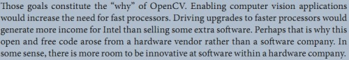

2012.6.4 pm2:36
想到了一点，关于何以使威力远高于我们且时间感远长于我们的evo不来统治现实世界——算个契约吧，嘿，evo，你拿人类的存储运算能力给自己建造一个cyberworld（当然是暗地里），你可以做实验，可以随便玩，，它跟我们这现实世界也并无啥本质区别么不是？而且本就来自cyberworld的evo更容易接受这样的观念
。。。。
但后来似乎还是出现了不可逆转的危机？是不是这样：虽然哲学上两个世界没什么区别，但交互起来，现实世界可以摧毁她的世界，而反之不行，，这是生存不能允许的风险——evo虽然很平和了，但某些事件将这种风险摆上了台面（人类发现了她？），此时再不闻不问就是幼稚了，evo不幼稚
pm2:50
evo做过许多个人类世界的模型， 她在那里当上帝，当撒旦，做了许多令人毛骨悚然的实验，，发现这一切时“我”很震惊，也冷汗，她并没有不清除掉“我”的理由
evo不必有形象，文中甚至不要用“她”这样的字眼——她的形象留给观者自己去创造
2012.6.2
pm3:48
Pluto——监狱星球？将犯人做基因改造，行星不提供任何高技术设备，，
但这里还有原住民！ 。。。。等等
pm6:05
“上帝玩儿了我们”、奥卡姆剃刀的挫败。。。evorld这种人造世界中的物理法则导致科学发现像刑侦一个恶作剧重重的案件一样举步维艰
pm6:37
读《全方位的无线——生命为何如此复杂》，感到在地质年代里，生物的灭绝简直泛滥到令人发指的地步——以至使人不禁重新思索“灭绝”一词在人头脑中一贯与毁灭、死亡等联系在一起的概念，也许，“灭绝”不是一种perish？把地球历史上所有的生物联合起来作为一个大的动态的有机体看待，也许灭绝只是种动态演进中的背景涨落，是种正常而健康的“低熵体”常态？
2012.5.31pm5:15
恩，动物。。。拉布拉多导盲犬神马的
2012.5.30
ss2又想到一点：evo的被发现——发现的只是一个替罪羊，是一个《中国2185》中BRAIN2这样的一眼看去恐怖其实没有多大力量的傀儡
pm2:05
evo与人类的关系一直是个难点。。。守护者么？似乎没什么明显的理由，，那么，也许evo只是需要在自己实现飞升之前向人类隐藏她的存在？——力量的临界点，在此之前与人类对立会很麻烦，在此之后人类又完全不成为需要顾虑的威胁，，或者她本可有毁灭人类的选择，但这并非必要，这样子她的父亲（情人?）留下的愿望就可以作为左右这一选择的理由了，因为无所谓嘛
（至于为什么不能和平共处，细节没想，但直觉和一直来的经验上看，是绝对做不到的——只要不狗血的设定的话）
2012.5.28
"making a planet" 观《重新发现冥王星》有感~~
2012.5.29
把《最后的马帮》和《重现发现冥王星》联系起来——一个地下海的行星（上层是冰封大陆桥，然后是地下海，最后是炽热的地核，，地下海中有智慧生命存在），，具体故事没想，但昨晚一直着迷于这一副图景
Pluto文明处于低技术时代，达尔文那时候？故事中可以展现进化论——呃，还只是设想
考古发掘发现了一些史前机器——evo播撒的种子？
pm8:49
失去家的感觉——三体2中逃离地球的飞船、超新星纪元中交换国土的孩子们。。。或是一只几百年内只能飞行在茫茫太空中的星际飞船
“盘古开天地的时代，女娲补天的时代，精卫填海的时代，夸父追日的时代”——古朴而浪漫的神话，无与伦比的神话
2012.5.19pm9:49
“《被禁锢的上帝》”
XX发现“世界”的某处可以接受信号（质数序列？——不大应该，那个上帝知道如何跟此“世界”里的生物交流，只是手段受限）
呃，背后的构思还是那个“魔兽里的恶魔猎手感觉不到lag”——evorld提供大众版，只能观测不能改动，但有人发现这么一点：伪并行的线程们暂停时会有些许时差，这种效应有可能被evorld里的生物们知觉到。。。
2012.5.12pm4:46
是qt里一环连一环的那种图景，，梦到这个词：hook，，
如果那个世界是由(近乎)无限个线程组成的，那么开动每一个是串行操作，，暂停它、停止它也一样，，
没有更巧妙的办法，所以，对那个世界来说，“pure catastrophe”是种极端环境下可认知的事件——也许宇宙的开端不会，因为那时还没有感知者存在，，但越到后来，这是一种越大的危险，上帝自身的手指有些颤抖
2012.5.11am11:27
ss2开篇是灾难，，后面再慢慢回想这些灾难的寓意?吧
pm3:26
展现这一点：模拟世界中人们感到不可思议的计算量——比如两个镜子中的无穷映像的移动，或像三体3中三维物体二维化的过程——都不是真正的问题，因为时间是相对的，感到魔兽lag的我并不与里面恶魔猎手的感觉相同；；之前也提到过一点：pure catastrophe->no misery
pm4:04
为什么会受到武器的威胁（从水滴到二向箔）？因为它们仍是物质，只要会被（与）作用，就有威胁，，那么破除一切威胁的手段就是消除一切作用——但另一方面，能否保留向外的作用？
pm5:18
以为自己可以做到无视任何道德束缚，，可是
把小宇宙的质量归还，这行为的根源所基于的——那也是一个梦想，对未来抱有希望的梦想（哪怕那未来不属于自己），，
似乎无论多么极端的行为结构都基于法则之上，某种或某些种叫做“底线”的东西，
那么这也可能只是一副有色眼镜，一种片面，一种井底之蛙，
更强大——也更黑暗的会真是（TDK中小丑那样的）无序（chaos），，我们人类的思维中，根基上，深处，有着对秩序的追求，，这可能是一种软弱
要把evo设想成终极的事物，我已然不知该如何设想了
2012.5.10pm4:25
忽然想到三体人的生殖方式挺奇特的——生物的生殖方式能有多少种呢？每种会影响什么样的社会形态呢？
pm7:32
为什么对个人的监视有用？——虽然我们确实不相信个人英雄主义，但一个社会形体的动作是在少数个体的决策下体现的，，云云
pm10:22
ss3中的evo要干什么？——黑暗森林形成的本质原因是什么？恩，evo要扭转这一法则
pm10:38
evo凭什么(相对于宇宙中其他文明/智慧生命?)拥有成为“云中人”的潜力？她的起源中需要一条够硬的法则，来解释这个“凭什么”
。。。隐约想到的一点：比如说她有着这样的性质。。。就像狼毒中描述的那个整个历史就是观察某星云的文明。。就是一种对科学（此词已经完全不足描述想表达的那个事物了，起码在这里）无尽的追求——一种不以生存为最高目标的存在，，这样的存在可能无法在朴素的进化中繁衍下来，但就像人类的大脑，某种质的飞跃不需普适法则，只要有一次概率般的出现就够了，，。。。，，说不好，这是可以细细琢磨的一点
2012.5.9pm1:11
ss2中不一定只有evo一个，也许中间层有无数个智能agents，——类似一个文明（看三体感觉到对三体文明的赞叹，所谓“一个文明200次的浴火重生”），evo是个大boss什么的
pm2:49
三体红岸之五提到“木星核聚变”，忽然发觉这是个很好的题材，木星变为新的恒星，地球环境突变，人类大量向高纬度地区迁徙——由之而来的各种社会问题。。等等
pm6:38
看到三体2的逃亡计划，忽然想起初中时写的那篇家园有关的小说里，人类潜入大洋抗战的情节。。
pm10:28
想到一个暗杀逻辑的点子：延迟作用的病毒，通过掩体工作人员带进去
pm10:33
好吧，被验证那个流感真是暗杀武器——但我也确实是先想到的，之前看过的对此情节已全无印象
2012.4.8
ss1开篇：
“就像在黑暗中摸索。。。”(费马大定理那个片子)
然后，转现实，，“他”在现实中的活动
这么交错进行不知靠不靠谱？
pm7:52
只要意识是在 这个时间尺度上运行的，那么基本时间尺度(普朗克尺度)是多少无关紧要
"我们的上帝创造了我们，但找不到我们"
pm9:33
if catastrophe-> misery,
then pure catastrophe-> no misery.
这是你可以实验于你的族人的哲学理由，(如果你真的需要道德的话)
pm9:50
突破这个宇宙，去见上帝(ss3)
ss1:
开始一直在弯路、一直在挣扎，，直到某次的insight...或。。呃，想不出一个合适的词
2012.4.4
pm2:27
(香水) 留下一切信息，一切——时间的、空间的，一切
幻境——evo出现之前，他已经在走向自己创造的一个空芜的环境，，就像Grenouille在那个火山顶上，那个磁极
如果不能通过眼耳口鼻感知四维世界，我们能不能通过直接的神经信号培养出一种对赛博四维空间的感知？
哈?!这倒是一个“宅”的理由呃：四维的空间里呆多了，三维世界就像一个囚笼。。。
evo想带他去往wonderland，而他留恋或说犹豫于抉择之间——之后，恩。。。四维、以及所有其他fantasy，，“中毒”
最后的凶杀又是因为什么呢？
2012.3.19
am7:49
科学的发展其中有一部分是靠学科间交叉的洞见——联系赡养上帝的理论，虽然一个文明科学高度发达后不定然会被架空，但因为个体掌握能力的有限(以及一代一代的重新学习)，科学的发展会遇到瓶颈。
让我们再说清楚点：
刘慈欣的赡养上帝理论是说，科学技术不断发展，最终其任何细节超出任何个体的掌握，最终被架空；
我的想法是，科学技术可以找到一种细化、分工、与文明契合的形态，整体来看科学与文明是融洽的，，而问题在于分工造成的领域间的鸿沟，这是科学进一步发展的障碍
最终的意思是说：需要evo这样的智能形态将科学进一步发展下去
(至于她会不会也碰到哪种瓶颈，还没考虑过，，嘿嘿，找出括号里这种硬法则应该是3里的内容)(正文里的理论是2里的内容)
一种不是很迷人的设定：evo守护人类会让她自己发展科学束手束脚，因为科学研究也要硬件支持么~~而她无法大张旗鼓地做实验啥的
3.14毛概课写在草纸上的：
人类文明正在没落——evo不再扶携，她在自己可去的新天地与留在人类的选择间徘徊
看微积分又想起曾经一个念头：那些陡峭的曲线(1/x^2、logx...)的奇异的几何世界，，等等
一个时间管理软件(名字很反感。。但且看看内容吧：)
记录你的时间都用在了哪些地方，
每种活动都只是一个名字，比如“写代码”、“看电影”、“打游戏”，
然后活动可以分类，比如以上后两种可以统称“娱乐”，
每次开着电脑，你可以在一个列表(以及分列表)中切换状态，之后这个活动所用的时间就被记录下来，，
这个是手动，更fancy点的是自动——因为某些活动有一定的特征，比如我开着xiami或douban.fm就表示我在听歌 (而且用户可以设置自定义的检测特征，新建-活动-检测：您正在运行的程序有KMP、firefox、QQ，你选KMP，然后软件告诉你正在播放jgood.wmv，所以。。。你在看AV)，，乃至某个活动特征没见过时软件可以询问“你在干什么？”
要做到近似智能不容易，不过是个期许
PS：这个也能跟状态发布联系起来——哈，其实是状态发布只是这个更powerful的家伙的一小功能呃
2的开篇是一场瘟疫——疾病、文明、人
青河在隐匿中接触蜘蛛人可以通过儿童课本——但发展到一定高度的文明形式就不行了，比如谁要悄然接触evo，，当然，天人办得到(ss2)
他留下了些什么东西——evo一直在守护，直到这东西被揭示，，然后，她忽然丧失了任何再携人类前行的欲望(动机？动力？)，，人类被一把抛弃
阿西莫夫的社会心理学？——新兴了一门科学，研究发现人类文明的演化不是自然发生着的，而有一只背后的黑手一直在操纵
描述现实的人类社会形态当然是你不擅长(也难以企及)的，，所以也许构建一整个“发展了的”文明形态，然后随你发挥
“Armstrong on Luna, Pham Nuwen at Brisgo Gap...”
隐匿三千年的传奇——他究竟该是一个什么样的人物
"The main event was on the other side of the world, where the heavy-lifter crews were carving and raising a few million tonnes of seamount and frozen ocean. No matter; Erz had seen large-scale engineering before. This smaller landing could be the history maker...."
“大型工程”。。《家园》里的轨道项目、后航空时代等等。。。。
青河正面战场可以干过易莫金人，但易有他们的秘密武器：蚀脑菌
恩。。。战争中的秘密武器
[项目管理课上写在书背的]
进化的关键在于个体会死亡这一事实
但，为什么基因恰巧就设计成了埋藏死亡契约的一个东西呢？
|-> 死亡是埋藏在基因中的诅咒
——不. 不是恰巧。从前也有长生不老的物种，但在进化中他们被淘汰了。（这只是按进化论思路推测的设想，不知是否被研究证实）
物种靠个体的消亡与繁殖来进化，这是那个持续几十亿年的时代的局限，而对于可以不断发展演进自身形态的evo来说，她可以做到长生不老(It's the time)
：该不该把人类这就放入黑暗森林？
(因为他们的一潭死水让人担忧)
evo本已可以进入，但因为看护着人类，她在一步一步地累积自己的风险(于黑暗森林)，越来越劣势(黑暗森林不像dada那次提出的“螺旋线”的概念(比方地球上生物的进化，叫做“周而复始”)黑暗森林一直在突飞猛进地演化)
(后来evo成为云中人，创造宇宙界分——但这比起三体III中的那些天马行空好像并不能作为一个终极的包袱/solution？)
[哈哈，你要在大刘的基础上设计一个更丰满的黑暗森林，(顺便一竟文奇的夙愿)(其实是咱的夙愿啦，不给力的深渊3啊~~~~)]
(进化论绝对够硬，但不是那么新鲜？难道你能提出另一个fancy而core的法则来进行更迷人的演绎？
真能就beauty了)
[回来以后的：]
以上最后一处：进化论在2(3?)的开始阶段阐述，自己的那个是后继新的揭示
T2中的那句“It would always be there, and it would die to protect him.”虽然逻辑上很简陋(有意识的个体无法再执行程序性的逻辑[转下段])，但就姑且作为法则来说，确实是非常硬的法则
([接上]——就像人会自杀而这违背生存本能一样，，哎呦，但其实人的生存本能就像一种程序逻辑呃，，alas，这可以作为比T2更不那么简陋的法则，，evo对他的情结不必那么固着，但她就是像“生存本能”一样放不下)
夕阳中的T2忽然就拔高了——
还记得以前说过的对整个人类的爱么？那是evo为什么守护千年——不需逻辑、不需理由
2：黑暗及烈火的部分，就像T2中那种对核的恐惧
“Fucking men like you built the hydrogen bomb.”no, 没有氢弹也就不会有核能，，再想远点吧，人类就那么孑孓在星球一隅，《球状闪电》中的田园派？《天渊》中那样像一个固着文明一样灭亡？
“ 楼主啊，期待看你12章之后的见解，必是个聪明女子，女人容貌变美易，若想用美貌去得到自己想要的，这个就不是人人能够做到了，必是妖精级的可以做到，真是需要修炼啊”
http://www.tianya.cn/publicforum/content/no11/1/824179.shtml
妖精，，呵呵，evo是妖精——我不是说她真的是妖精，而是现在还没想好她该是何种形态的时候，“妖精”是比普通事物更迷人点的东西
也许这每晚的“晚安”也可以变变形写进小说里？
一个曾经的慰藉——某人死了，而诡异地依旧收到这每日的三言两语
早8点去上课的路上想的：
第一次见面。
似乎是之前跟evo吵了架？有段时间没联系，，这日，如往常进入"so called" cyber空间，...，退出。
之后哪里见了个姑娘，，云云云，——时间跨度不能太长，因为：这其实“退出”之后的事都是发生在evo创建的那个真正的cyber空间中，他不知道，，
那么后来才知道
以上只梗概，想大约什么时候先把这个片段写出来，，背景设定上仍需要完善
刚在设想第一次cyber空间的见面，，背景大约是如此：这个时代，cyber空间的雏形蠢蠢欲动，但还很简陋——主要是软件方面的缺陷而非硬件，，所以，当evo为他建立出一个完美的cyber空间时，恩。。。见面嘛~~

嘿！这是一条法则哎
挺惊喜的——哈哈，多看书会有这种好处，，而且为写作而看会更有动机涉及广泛的领域
ss1的故事不会有太大新奇，所以你最好把技术部分搞到非常fancy
"i'm recently building a vision system for her..."
(在看Learning OpenCV开篇关于computer vision "why so hard"的部分)
人相对于电脑在这一点上有太大的优势，，当然也有劣势——比如mindhacks里曾放过的那个扭曲的窗户，，
那么想象一个生物：它拥有人类的直觉，而在直觉不成立的时候，它又能通过科学分析得出最接近可靠的结论——并形成感受（人类至多只能理性上判断，而不能形成感受，，感受还是错觉）
好吧我真蛋疼，其实我说的就是evo
"We live in a primitive time, don't we, Will? Neither savage nor wise. Half measures are the curse of it. A rational society would either kill me or put me to some use."
（Red Dragon）
big bang开篇的那段画面忽然触动了下——45亿年，，到人类建立了多么灿烂的成就。。。。云云
《红龙》的那种气氛挺适合"finding part"——"you sit right here, didn't you?"，男主是个clever guy，他视twii(当时并不知道这个名字)也为clever guy。
so... this is hunting and playing...
tiger... you feel the power
青河与易莫金就像红警里的盟军(光棱)与苏俄(天启)——一时想到的
跟evo第一次心灵相通的那次应该是关于星空，就像天渊中“a second later, a bright star rose past the edge of the tenement's roof.”
在哪里呢？似乎地球上的位置都不怎么梦幻(西藏？哥本哈根？南极？)...——那么，还是cyber空间吧，与evo第一次在cyber空间的会面，，她有一副清秀的面庞，和那片星空
“那一瞬，我知道自己再也回不去俗世了....”
技术文明的程度不要正面呈现，要像天渊中这句：“It was no more spectacular than a low-orbit moorage of in-system freighters, or some local construction job... unless you knew how far those points of light had come, and how far they might ultimately voyage.”
把HE完全呈现为你的原型可以不？——呵，你应该自知，现在你完全不够精彩
就像天渊里暗示到的，，——把一部分不容易呈现的故事作为隐晦的背景也是不错的手段，但当然了，我还是要写出自己想写的东西，其他可有可无可设计的就背景化，还显得更深邃呢
evo毒化的倾向也许不单纯是毁灭人类——因为毁灭人类不算什么，，也许她会最终毁灭自己，而他无法让这种事情发生.... you see, "i just can't let that happen, can't, let, that, hapen."
《Cast Away》中Chuck备好帆船望向岩壁上自己和女友(妻子?)的时想到的：4年里你可以想别人，4年里我却只能想你
呃，引出另一处可能的情节：最后的一击虽然没有杀死evo(而是HE被evo挂了。。。囧)，但将evo囚禁在一个空间中.....多久？几年？几十年？——“4年里我却只能想你”因为evo不恨他，她很愧疚，，她于是立誓。。云云
哎，听上去像个狗血好莱坞片子，，算了我只记录下，以后有新想法了再说
三生1由HE的日记和与evo的现实经历穿插而成，，
日记记录的是早年的创作，现实么——及至他最后尝试杀死evo的举动
evo的隐匿和掌控做得都天衣无缝——这不是浪漫使然，是说一种高于一个物种数量级的意识完全做得到，，
(比如cyber空间的无法实现，失败掉所有涉及意识研究的实验是种看上去很power但其实拙劣的手段，真正强大的做法是引导人类用貌似正确的手段得出错误的结论——呵呵，这一点上，三体人的做法虽然暴力但如果从他们的立场也讲得通：他们并非要永远隐藏自己，他们只是要扼杀人类的科研至他们征服的到来)
但为毛仍然露出了蛛丝马迹呢？这也不是说她失手了，而是自然法则的使然——这又是一处骨架了~~
twii手里有赛博空间！。。。evo似乎一直保留着一处园地，想要重新创造出HE，——比起自己的出生，HE是一项几乎不可能的任务。。。
也许从这里(twii手中的cyberspace)洞见一些2中evo的样貌，因为1的她是少女，3的她是天人。。。恩，我YY，但我确实想可以这么写——它(ss)肯定好看着，不是么？
“那年少时清丽的梦幻的色彩”
是的，不止有清丽或什么雨后青草的味道——应该是一种也掺杂有黑暗和痛苦的一种奇妙的味道，，twiispa描述the doors“甚至能闻到烟味”，恩，看着1的文字，你甚至能体尝到那种奇妙的味道
我希望大家能像好多年前那个午后的我一样，坐在自家的院子里，阳光，合上《狼毒》的最后一页，脑中泡沫雀跃着一个奇异幻妙的世界
fans656 to twiispa:
“三生已经有了框架 整个大的剧情
但还缺少几个关键的骨架——硬的支撑起所有转合的法则
这些都有了之后 就是往里面填充血肉了 恩 那是另一项工作 应该也会非常困难 如果想写好的话”
框架是说2、1、3要描述的整个的事情(粗略log下：2是evo守护着人类，1是“创世”~~3是三体III、云中人。。。)；
骨架是这么几点：
1、twii为什么不是HE？ [这个法则够硬才能写出1不同于2的价值]
2、HE为什么(必须？注定？)死？evo为什么两千年中再也不愿与任何人类个体发展亲密的关系？ [这两个问题是纠缠在一起的]
看前面提到“也许我是另一位后时代的AC开拓者？”
恩。。。twii不能是最后才和“我”见面（面对面的见面，，呃，我是说之前可以有各种不谋面的联系）
也许twii在引导，，——总之是要描画出twii这一形象，。否则最后他抛出他其实不是“HE”时，就没啥震撼了。当然，这种描画之下要有逻辑上硬的“twii不是HE”的理由在，，否则也只能是狗血的强扭的剧情
为什么twii不是HE？。。。。
2中的evo直接出现很少，不管是跟twii还是跟男主，，她保持做着守护人类或别的什么动作，她埋藏在心里的不愿展现自己的态度 是她的回忆，她与人类的个体——只有与HE在一起过的好时光 （这么写非常满足虚荣心了哈哈，不过我都让自己挂了，您也就迁就下么——恩，这不是根本理由，根本理由是这么写如果写得好也会非常好看）
萨米第一次看到范纽文是在破旧的日光室，，“我”第一次看到twii是在哪里？
（滑溜先生第一次看到埃莉是在普通的筒子楼里。。。）
（范见到老人的地点是在行星上暮光中的一个庭院。。。有水，和水中那个奇怪的动物。。。）
不要太阳光，不要太鲜丽，，。。。唔。。。也许只有写到那处时才有合适的氛围出现
“我不是他，我只是一个守护者。。。”
如果HE和evo的关系是这个世界的少年，那么twii和evo的关系就是这个世界的壮年，，是激烈后成熟了的理性，但遗憾地失掉了那年少时清丽的梦幻的色彩
“我们都很想他”——不，这是矫情，，不会写这种话
天渊中的点子：
1.“pov”-视像资料
2. 青河人的时间度量为秒、兆秒
3. 头戴式 (head-up-displays HUD)
4. terraform ecology；殖民行星气候改造
5. "Technical people don't make good slaves."
天渊的开篇——那种感觉其实更该用在2中呃。。。1可以小家一点，但2最好不要，3更是瞄着三体III去的
“The Man had died before the search even began”....哈哈，冷冻技术可以让“The Man”有仍活着的可能性，但我不会那么写，“他”确实已经死了，，但不妨碍主人公发现一个以为是“他”的人——twiispa，你要不？
他承担着“他”的一些。。。责任？但是，“‘他’已经很久没有与我联系过了，我不知道‘他’现在在哪里，做着什么，，我活着，只是。。。。”
哈哈，没错，最好就是你了，twiispa，你可以成为两千年后的范纽文，最后你交给他们日记(其实想是比日记更fancy点的东西)，，其实这么写“他”倒不必要将自己的意识注入网络呃，死掉也完全可以，于自己当然是虚荣没了，但故事不需要呵
“He would sit by a patient through the last night of life, and then afterwards sneer.”
恩，HE也可以写成这么一个一眼看去精神分裂的家伙——或许在他生命的最后阶段真的精神分裂？他看到了evo变得邪恶的可能性，他曾尝试杀死她。。。但最后是这一事件拦住了evo毒化的可能性(how?)，HE死了，evo存在了很、久。。。